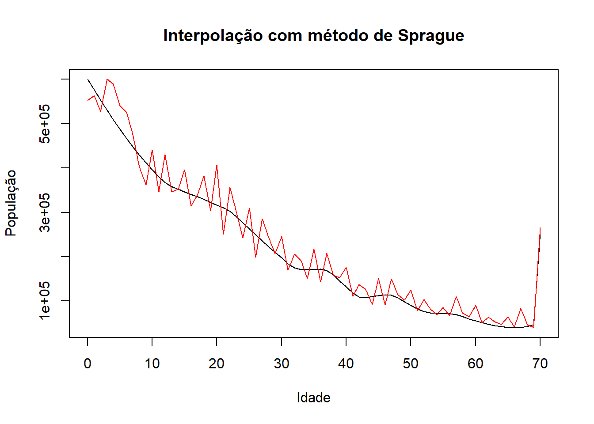
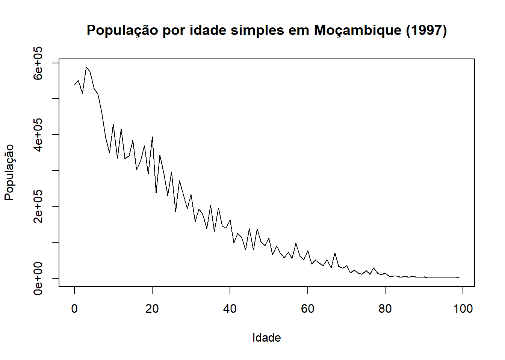
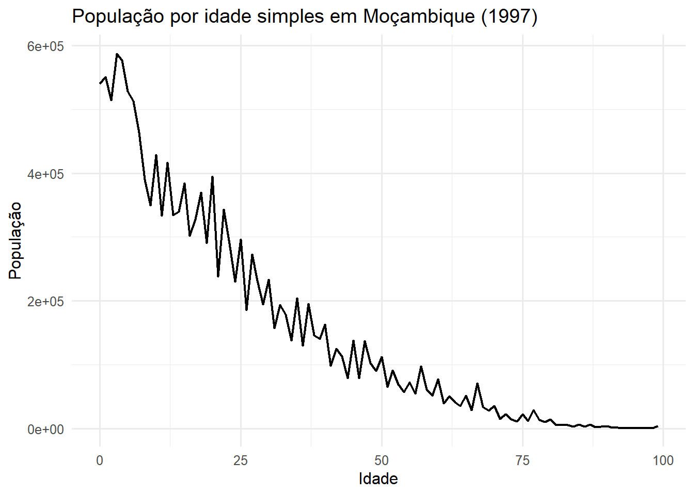
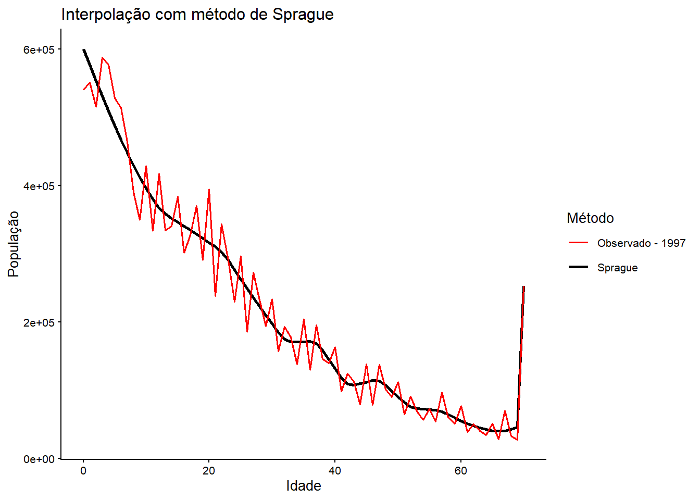
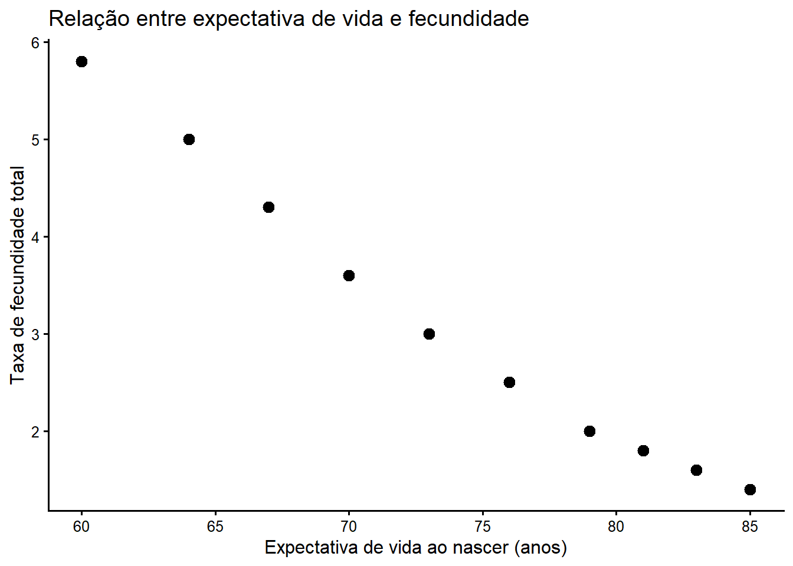
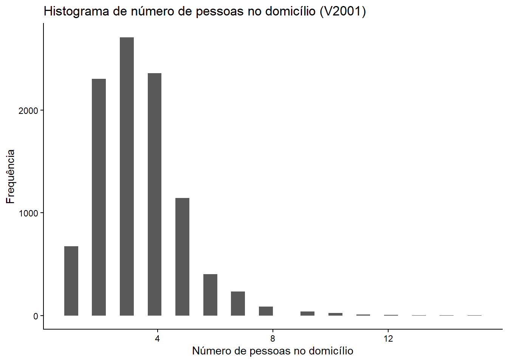
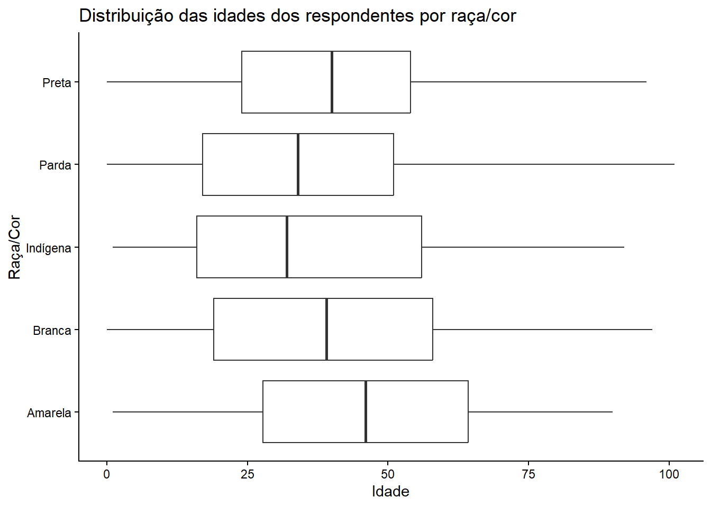
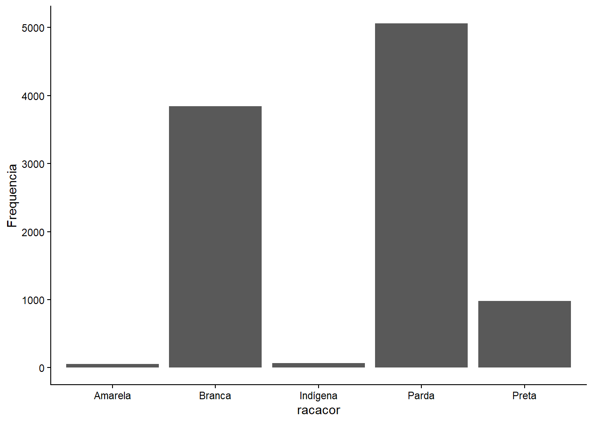
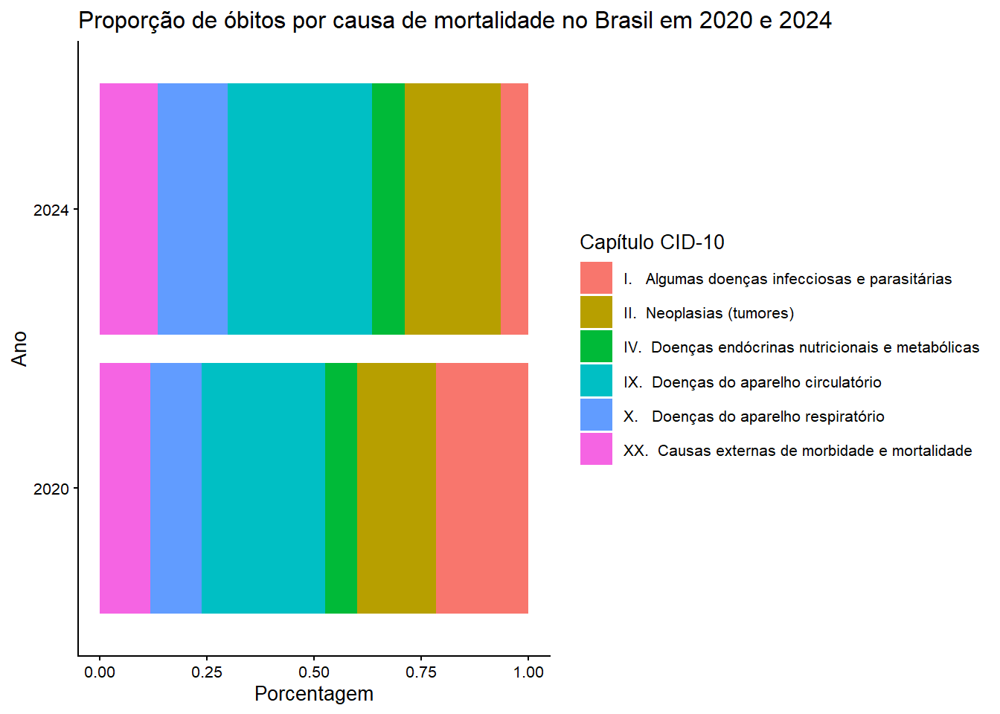

# Se não tem remotes instalado, retire o # da linha abaixo.
# install.packages("remotes")
# requires the development version of rstan, sorry!
# install.packages("rstan", repos = c("https://mc-stan.org/r-packages/", getOption("repos")))
# remotes::install_github("timriffe/DemoTools")
# ?DemoToolsIntrodução a R aplicado a Demografia - 2
Análise demográfica com R
Se quisermos analisar processos da demografia, existem algumas possibilidades. Como vimos anteriormente, é possível realizar toda a análise de forma manual ou autoral, de modo que criaremos todas as transformações dos dados desde o começo. No entanto, já existem vários pacotes implementados no R que podem nos ajudar com esses tratamentos e análises. Um dos principais pacotes na demografia é o DemoTools. Podemos aprender mais sobre o pacote abrindo a sua documentação:
https://timriffe.github.io/DemoTools/
Podemos também utilizar o helper do R depois de baixar e carregar o pacote:
Vamos utilizar algumas funções do DemoTools para entender melhor as funções. Para facilitar, vamos refazer algumas atividades da disciplina Análise Demográfica I, que foram feitas utilizando Excel. Nesse momento, recriaremos com o R para mostrar um paralelo entre ambos.
Na próxima seção (Gráficos) iremos criar os gráficos para avaliar os resultados.
Qualidade de dados: avaliação de preferência por dígitos
A correção de dados demográficos a partir da preferência de dígitos dos respondentes é bastante comum e necessária na Demografia. Podemos realizar essa correção a partir de diversos métodos e ferramentas de análise. Na disciplina Análise Demográfica I vimos os métodos Whipple e de Myers, os quais já estão implementados no DemoTools.
Outros métodos também estão disponibilizados e podem ser vistos na aba Short Manuals da documentação do pacote. Vamos utilizar os dados da disciplina, a população por idade simples de Brasil (1970), Colômbia (1973) e Moçambique (1997).
Para a análise no R as colunas estão com uma formatação dos nomes que ajudam pouco, mas iremos tratar disso na terceira parte do minicurso.
# Importar a base de dados
library(readxl)Warning: pacote 'readxl' foi compilado no R versão 4.5.3#
pop_single <- readxl::read_excel("E:/Minicursos/IntroR/bases/base_pop_s_age.xlsx")
#
# # Visualizar a base
head(pop_single)# A tibble: 6 × 4
Idade `Brasil, 1970` `Colômbia, 1973` `Moçambique, 1997`
<dbl> <dbl> <dbl> <dbl>
1 0 2916263 504070 540250
2 1 2491673 509430 551070
3 2 2872707 595830 514980
4 3 2853641 633320 587600
5 4 2858771 627110 576580
6 5 2833194 631090 528340O caminho (acima entre aspas) é o que identifica o arquivo que precisamos inserir. Neste caso estamos usando um formato específico por termos baixado todo o minicurso online. Para identificar o arquivo no seu computador, insira algo como:
“C:/Users/usuario/Desktop/grafico/base.xlsx”
Lembre-se que cada computador tem caminhos e nomes diferentes.
Vamos agora calcular o índice de Whipple para todos os países com a função check_heaping_whipple. Utilize o helper (?) para entender os argumentos. Como o argumetno Value percisa de um vetor com as populações por idade, precisamos criar objetos que são vetores para cada população. Podemos criar com a ferramento básica do R ou com o dplyr.
# Ferramenta básica do R
br_vetor <- pop_single$`Brasil, 1970`
co_vetor <- pop_single$`Colômbia, 1973`
mo_vetor <- pop_single$`Moçambique, 1997`
Age <- pop_single$IdadeCom dplyr a gente utilizaria:
# Com dplyr
# Perceba que não estamos salvando o resultado no objeto, então o que vale é o que fizemos anteriormente.
library(dplyr)
Anexando pacote: 'dplyr'Os seguintes objetos são mascarados por 'package:stats':
filter, lagOs seguintes objetos são mascarados por 'package:base':
intersect, setdiff, setequal, unionpop_single %>%
pull(`Brasil, 1970`) [1] 2916263 2491673 2872707 2853641 2858771 2833194 2767004 2752398 2617757
[10] 2448245 2640440 2329768 2467318 2269654 2254514 2257295 2174995 2080472
[19] 2188793 1850088 2050633 1633948 1822823 1660952 1448174 1581282 1331225
[28] 1232946 1323410 1071340 1593847 984634 1142146 1044410 1007071 1225834
[37] 992731 918596 1077239 911047 1342387 742126 916608 783599 756684
[46] 939942 716547 616129 732655 571378 932075 477913 584524 495190
[55] 490622 610905 499476 406164 460741 373832 682238 270632 320854
[64] 293589 281848 362369 256402 209564 240215 200157 360675 110576
[73] 142522 114257 110715 141335 92092 71217 84004 49496 123619
[82] 42963 51170 30851 31154 39124 23506 15822 17209 11833
[91] 25355 4422 5497 4508 3344 5643 3433 2022 3453
[100] 14818# Cálculo do Índice de Whipple por país
library(DemoTools)Carregando pacotes exigidos: RcppWarning: pacote 'Rcpp' foi compilado no R versão 4.5.3br_whippleI <- check_heaping_whipple(
Value = br_vetor,
Age = Age,
ageMin = 23,
ageMax = 62,
digit = c(0, 5)
)
co_whippleI <- check_heaping_whipple(
Value = co_vetor,
Age = Age,
ageMin = 23,
ageMax = 62,
digit = c(0, 5)
)
mo_whippleI <- check_heaping_whipple(
Value = mo_vetor,
Age = Age,
ageMin = 23,
ageMax = 62,
digit = c(0, 5)
)
print(br_whippleI)[1] 1.262898print(co_whippleI)[1] 1.393698print(mo_whippleI)[1] 1.192602Para avaliação gráfica, podemos conferir a distribuição da população por idade em algum país., neste caso Moçambique. Aprenderemos a criar os gráficos posteriormente.

Interpolação da contagem populacional
A interpolação é como um processo de destrinchar dados agregados em dados simples ou unitários. Nesse caso, uma população em grupos etários pode ser interpolada para uma contagem populacional em idades simples.
Na disciplina utilizamos o método de Sprague e iremos refazê-lo aqui a partir da função graduate do DemoTools, com os dados agregados por grupo etário da população de Moçambique de 1997.
# Importar a base da população de moçambique por quinquenio
pop_abr <- readxl::read_excel("E:/Minicursos/IntroR/bases/base_pop_abr_age.xlsx")
# Visualizar a base
head(pop_abr)# A tibble: 6 × 2
Idade pop
<chr> <dbl>
1 0-4 2770480
2 5-9 2244770
3 10-14 1854050
4 15-19 1674160
5 20-24 1496850
6 25-29 1181490# argumentos da função:
# Value:
mo_abr_vetor <- pop_abr$pop
library(stringr)Warning: pacote 'stringr' foi compilado no R versão 4.5.3# Age
AgeAbr <- pop_abr %>%
mutate(
Age =
as.numeric(str_extract(
string = pop_abr$Idade,
pattern = "\\d+"))
) %>%
pull(Age)
print(mo_abr_vetor) [1] 2770480 2244770 1854050 1674160 1496850 1181490 900390 816100 578940
[10] 546950 395350 337620 243230 211980 252690print(AgeAbr) [1] 0 5 10 15 20 25 30 35 40 45 50 55 60 65 70# Aplicar a função para interpolar
sprague <- graduate(
Value = mo_abr_vetor,
Age = AgeAbr,
method = "sprague")
single_age <- names2age(sprague) # identifica a idade simples a partir do vetor criado pela função graduate.
print(sprague) 0 1 2 3 4 5 6 7
600084.10 576677.52 553622.80 531041.28 509054.30 487783.22 467349.36 447874.08
8 9 10 11 12 13 14 15
429478.72 412284.62 395958.59 380167.42 367305.18 358402.30 352216.50 346250.03
16 17 18 19 20 21 22 23
340732.45 335244.13 329235.49 322697.90 316448.03 310653.38 302477.22 290693.14
24 25 26 27 28 29 30 31
276578.24 262896.13 249406.18 235961.46 222868.90 210357.34 197789.23 184620.69
32 33 34 35 36 37 38 39
175225.25 171502.13 171252.70 170952.00 171992.45 168972.37 159067.57 145115.62
40 41 42 43 44 45 46 47
132258.62 118844.59 109776.59 107812.51 110247.68 111961.10 114386.86 113791.74
48 49 50 51 52 53 54 55
107933.66 98876.62 90717.86 82387.30 76117.38 73350.50 72776.98 71804.42
56 57 58 59 60 61 62 63
71142.91 69291.39 65303.95 60077.33 55613.84 51704.64 48140.88 45082.24
64 65 66 67 68 69 70
42688.40 41119.04 40533.84 41092.48 42954.64 46280.00 252690.00 Podemos ver o resultado a partir do gráfico abaixo, que representa a população interpolada em preto e a população por idade simples em vermelho.

Construção de tabela de vida
Também podemos construir a tabela de vida com uma função do DemoTools. Nesse exemplo vamos criar a tabela de vida da população masculina do Brasil no ano de 2022. Primeiro, carregamos os dados:
# Importar as taxas específicas de mortalidade
nmx <- read_excel("E:/Minicursos/IntroR/bases/nmx_br_m_2022.xlsx")
head(nmx)# A tibble: 6 × 2
idade nmx
<chr> <dbl>
1 0 0.0134
2 1 0.0006
3 5 0.0002
4 10 0.0003
5 15 0.0014
6 20 0.0025# Definir as faixas etárias
AgeLT <- nmx %>%
mutate(
age =
as.numeric(str_extract(
string = idade,
pattern = "\\d+"))
) %>%
pull(age)
# Definir as taxas específicas de mortalidade
tem <- nmx$nmx
# Tabela de vida por idade simples até 100 anos ou mais
br22 <- lt_abridged2single(
nMx = tem,
Age = AgeLT,
axmethod = "un",
OAG = TRUE, # True se o ultimo grupo é aberto
)
# View(br22) # para ver a tabela completa
head(br22) # para ver só as primeiras cinco linhas Age AgeInt nMx nAx nqx lx ndx nLx
0 0 1 0.0134000000 0.122551 0.0132442762 100000.00 1324.42762 98837.88
1 1 1 0.0009537947 0.500000 0.0009533401 98675.57 94.07138 98628.54
2 2 1 0.0006821820 0.500000 0.0006819494 98581.50 67.22760 98547.89
3 3 1 0.0004929668 0.500000 0.0004928453 98514.27 48.55229 98490.00
4 4 1 0.0003640266 0.500000 0.0003639604 98465.72 35.83762 98447.80
5 5 1 0.0002782147 0.500000 0.0002781760 98429.88 27.38083 98416.19
Sx Tx ex
0 0.9883788 7207594 72.07594
1 0.9978819 7108756 72.04170
2 0.9991823 7010127 71.10997
3 0.9994126 6911579 70.15815
4 0.9995716 6813090 69.19250
5 0.9996789 6714642 68.21751Gráficos
Os gráficos são largamente utilizados para a visualização tanto dos dados iniciais quanto após o tratamento, assim como os resultados de uma análise. Criaremos alguns a partir das três funções utilizadas do DemoTools e alguns outros exemplos gerais.
Podemos utilizar a função plot, que é base do R, ou outros pacotes, como o ggplot2, bastante utilizado.
População de Moçambique em gráfico de linhas
# utilizando o pacote basico do R
plot(Age, mo_vetor,
xlab="Idade",
ylab="População",
type='l',
main="População por idade simples em Moçambique (1997)")
# utilizando o ggplot2
# install.packages(ggplot2)
library(ggplot2)
df1 <- data.frame(
Age = Age,
Populacao = mo_vetor
)
ggplot(
data=df1,
aes(x = Age, y = Populacao)) +
geom_line(linewidth = 0.8) +
labs(
title = "População por idade simples em Moçambique (1997)",
x = "Idade",
y = "População"
) +
theme_minimal(base_size = 12)
Com dataframes (bases de dados) o ggplot2 é bastante utilizando pelas suas possibilidades de uso. Outros pacotes podem ser utilizados em substituição ou de forma complementar a este pacote. Vamos continuar utilizando o ggplot2.
Interpolação e população observada
O ggplot necessita de um dataframe para gerar o gráfico. Asism, podemos gerar o resultado de uma análise já em dataframe ou criar um para isso.
# Base para o gráfico
df2 <- data.frame(
Idade = single_age,
Sprague = sprague,
MO = mo_70
)
# Criação do gráfico com o ggplot2
ggplot(df2, aes(x = Idade)) +
geom_line(
aes(y = Sprague, color = "Sprague"),
linewidth = 1
) +
geom_line(
aes(y = MO, color = "Observado - 1997"),
linewidth = 0.7
) +
scale_color_manual(
name = "Método",
values = c(
"Sprague" = "black",
"Observado - 1997" = "red"
)
) +
labs(
title = "Interpolação com método de Sprague",
x = "Idade",
y = "População"
) +
theme_classic(base_size = 10)
Em geral o ggplot tem a seguinte estrutura:
data = identifica qual é a base de dados a ser utilizada
aes() = identifica os eixos x e y da análise
- Se seu gráfico tem mais de um eixo y, podemos identificar só o eixo x nesse argumento
geom_line() indica que queremos um gráfico de linhas com os dados indicados em seu argumento “y”.
labs() permitem que o usuário possa indicar quais são os títulos do gráfico e dos eixos.
theme() indica o tema geral do gráfico. Temos algumas opções, como minimal e classic que utilizamos acima. Mas também há outras opções na documentação.
Outras diversas opções são possíveis.
scale_manual permite a especificação da estética do gráfico em vários aspectos:
cores: scale_color_manual
preenchimento: scale_fill_manual
tamanho: scale_size_manual
formatos (scale_shape_manual)
linewidth, disponível em várias funções, indica o tamanho da linha
fontsize, indica o tamanho da fonte da leta
base_size indica o tamanho para todo o conjunto
De acordo com o tempo e a necessidade, iremos conhecendo melhor as possibilidades.
Alguns outros tipos de gráficos são interessantes. Na tabela abaixo temos alguns dos principais tipos e exemplos básicos.
| Gráfico | Exemplo |
|---|---|
| Barras | Número de habitantes por região |
| Barras empilhadas | Proporção de óbitos por causa |
| Histograma | Distribuição das idades de uma população |
| Densidade | Distribuição de renda |
| Boxplot | Salário por nível de escolaridade |
| Dispersão (scatter plot) | Altura × peso |
| Área | Crescimento populacional ao longo dos anos |
| Mapa de calor (heatmap) | Taxa de mortalidade por idade e ano |
Exemplos de gráficos
Abaixo temos alguns tipos de gráficos com exemplos. A proposta aqui é mostrar qual é o mínimo para se criar um gráfico e mostar que não são códigos complexos. Apesar disso, não são gráficos muito elaborados, mas que podem ser melhorados da maneira que o autor preferir. Na última seção do minicurso iremos falar mais sobre visualização de dados, mas nesse momento o interessante é entender como criar os gráficos básicos.
Scatterplot
# Base fictícia
dadosfic <- data.frame(
Pais = c("Alfa", "Beta", "Gama", "Delta", "Épsilon",
"Zeta", "Eta", "Teta", "Iota", "Kappa"),
ExpectativaVida = c(60, 64, 67, 70, 73, 76, 79, 81, 83, 85),
TFT = c(5.8, 5.0, 4.3, 3.6, 3.0, 2.5, 2.0, 1.8, 1.6, 1.4)
)
# Gráfico
ggplot(dadosfic,
aes(x = ExpectativaVida,
y = TFT)) +
geom_point(size = 3) +
labs(
x = "Expectativa de vida ao nascer (anos)",
y = "Taxa de fecundidade total",
title = "Relação entre expectativa de vida e fecundidade"
) +
theme_classic(base_size = 12)
Histograma
# Importar a amostra SEM DESIGN da PNADc 2024
# Pesquisa Suplementar sobre Educação
# Este arquivo é um csv, usar read_excel não funcionará.
pnad <- read.csv("E:/Minicursos/IntroR/bases/amostra_pnad_2024.csv")
# Conferir a base. Melhor usar View, porque tem centenas de colunas.
# View(pnad)
# Criar o histograma para qualquer coluna, como UF
ggplot(pnad,
aes(x=V2001)) +
geom_histogram() +
labs(
x="Número de pessoas no domicílio",
y="Frequência",
title="Histograma de número de pessoas no domicílio (V2001)"
) +
theme_classic()`stat_bin()` using `bins = 30`. Pick better value `binwidth`.
Boxplot
base1 <- pnad %>%
select("V2009","V2010")
glimpse(base1)Rows: 10,000
Columns: 2
$ V2009 <int> 40, 70, 86, 8, 63, 22, 38, 58, 23, 30, 59, 60, 4, 25, 22, 42, 44…
$ V2010 <int> 4, 1, 4, 2, 2, 1, 1, 1, 1, 4, 4, 4, 1, 4, 1, 1, 2, 4, 4, 4, 1, 5…base1 <- base1 %>%
mutate(
racacor = case_when(
V2010== 1 ~ "Branca",
V2010== 2 ~ "Preta",
V2010== 3 ~ "Amarela",
V2010== 4 ~ "Parda",
V2010== 5 ~ "Indígena",
V2010== 9 ~ "Ignorado"
)
)
# Gráfico
ggplot(data = base1,
aes(x = V2009, y = racacor)) +
geom_boxplot() +
labs(
x="Idade",
y="Raça/Cor",
title="Distribuição das idades dos respondentes por raça/cor"
) +
theme_classic()
Barras
base2 <- base1 %>%
group_by(racacor) %>%
summarise(
Frequencia = n()
)
ggplot(base2,
aes(x=racacor, y=Frequencia))+
geom_col() +
theme_classic()
Barras empilhadas
Aqui vamos utilizar dados de óbitos. Porém, por causa da estrutura do arquivo que o TabNet disponibiliza, iremos utilizar a função read_delim para indica qual parte da tabela queremos.
Ao abrir o arquivo sim_obitos_2020_2024 vê-se que o cabeçalho da tabela começa na linha 4 e que temos 20 linhas até o fim da tabela de interesse - sem contar o total, que podemos calcular posteriormente.
# Dados do SIM:
# Número de óbitos por ano e pot capítulo da CID-10
# install.packages("readr")
library(readr)
df_sim <- read_delim(
file = "E:/Minicursos/IntroR/bases/sim_obitos_2020_2024.csv",
delim=";",
skip=3,
n_max=20,
locale=locale(encoding = "latin1")
)Rows: 20 Columns: 4
── Column specification ────────────────────────────────────────────────────────
Delimiter: ";"
chr (1): Capítulo CID-10
dbl (3): 2020, 2024, Total
ℹ Use `spec()` to retrieve the full column specification for this data.
ℹ Specify the column types or set `show_col_types = FALSE` to quiet this message.# Conferir a base
head(df_sim)# A tibble: 6 × 4
`Capítulo CID-10` `2020` `2024` Total
<chr> <dbl> <dbl> <dbl>
1 I. Algumas doenças infecciosas e parasitárias 267287 75370 342657
2 II. Neoplasias (tumores) 229300 264845 494145
3 III. Doenças sangue órgãos hemat e transt imunitár 6596 7594 14190
4 IV. Doenças endócrinas nutricionais e metabólicas 92749 90178 182927
5 V. Transtornos mentais e comportamentais 17168 19593 36761
6 VI. Doenças do sistema nervoso 45598 59756 105354# Causas de interesse
causas <- c(
"I. Algumas doenças infecciosas e parasitárias",
"II. Neoplasias (tumores)",
"IV. Doenças endócrinas nutricionais e metabólicas",
"IX. Doenças do aparelho circulatório",
"X. Doenças do aparelho respiratório",
"XX. Causas externas de morbidade e mortalidade"
)
# Manter só essas causas
df_sim <- df_sim %>%
filter(`Capítulo CID-10` %in% causas)
# Conferir a base
head(df_sim)# A tibble: 6 × 4
`Capítulo CID-10` `2020` `2024` Total
<chr> <dbl> <dbl> <dbl>
1 I. Algumas doenças infecciosas e parasitárias 267287 75370 342657
2 II. Neoplasias (tumores) 229300 264845 494145
3 IV. Doenças endócrinas nutricionais e metabólicas 92749 90178 182927
4 IX. Doenças do aparelho circulatório 357741 398605 756346
5 X. Doenças do aparelho respiratório 148773 194063 342836
6 XX. Causas externas de morbidade e mortalidade 146038 159534 305572# Criar porcentagem:
soma2020 <- df_sim %>% select(`2020`) %>% sum()
soma2024 <- df_sim %>% select(`2024`) %>% sum()
df_sim <- df_sim %>%
mutate(
perc2020 = `2020`/soma2020,
perc2024 = `2024`/soma2024
)
# Agora vamos tornar essa base wide para long:
library(tidyr)
df1 <- pivot_longer(
data=df_sim %>% select(!c(Total,`2020`,`2024`)),
cols=c(perc2020, perc2024),
names_to="Ano",
values_to="Perc"
)
# Ajustar o ano na coluna
df1 <- df1 %>%
mutate(
Ano = case_when(
Ano == "perc2020" ~ "2020",
Ano == "perc2024" ~ "2024"
)
)
# df_graf <- df1 %>% filter(`Capítulo CID-10` %in% causas)
ggplot(df1,
aes(y=Ano,x=Perc,fill=`Capítulo CID-10`)) +
geom_bar(position = "stack", stat="identity") +
labs(
x="Porcentagem",
y="Ano",
title="Proporção de óbitos por causa de mortalidade no Brasil em 2020 e 2024"
) +
theme_classic(base_size=10)
Exportação de arquivos
Da mesma forma que importamos dados com o pacote readxl e sua função read_excel, podemos exportar os dados gerados no R. A função write_excel faz esse função:
# install.packages(openxlsx)
library(openxlsx)
write.xlsx(
x=br22,
file="E:/Minicursos/IntroR/bases/br22.xlsx")No caso dos gráficos, podemos exportá-los tanto pela aba “Plots” do R no quadrante direito no canto inferior, quanto via código pela função ggsave do ggplot2:
graf <- ggplot(df1,
aes(y=Ano,x=Perc,fill=`Capítulo CID-10`)) +
geom_bar(position = "stack", stat="identity") +
labs(
x="Porcentagem",
y="Ano",
title="Proporção de óbitos por causa de mortalidade no Brasil em 2020 e 2024"
) +
theme_classic(base_size=10)
ggsave(
filename = "E:/Minicursos/IntroR/grafico.jpeg",
plot = graf,
width = 12,
height = 7
)Loops facilitam a vida
Loops são ferramentas essenciais para análise de dados, sobretudo para as atividades repetitivas. Quando temos três ou quatro países e precisamos dos dados para cada um deles, pode parecer interessante fazer um por vez. No entanto, se temos 40 países e 10 anos para cada país, fazer a tarefas 400 vezes não é a forma mais eficiente de realizar uma tarefa. Para isso utilizamos os loops. Há alguns tipos de loops, mas vamos aprender o for nesse minicurso.
Outra vantagem, talvez ainda mais importante, é que ao criar um loop, o usuário tem certeza do que está sendo feito em todos os componentes.
O loop tem a seguinte estrutura:
for (elemento in conjunto) {
# código que será repetido
}O for indica o início do loop
Os elementos entre parênteses indica que a atividade será feita em cada elemento daquele conjunto.
Entre chaves ficam as atividades a serem executadas (e repetidas).
O conjunto pode ser um conjunto de anos, como 2000, 2010 e 2022. O código que será repetido vai ser feito para cada elemento desse conjunto. Assim, pensando na Demografia brasileiro, pode-se ter uma análise para os últimos três anos censitários.
Um exemplo com soma pode ser o seguinte: tenho um objeto chamado “soma”, que é igual a 0. A este objeto queremos somar os número 2, 4, 6 e 8. Assim, o resultado final será: 0+2+4+6+8 = 20. Posso criar um loop que soma cada número desse ao meu objeto soma. Perceba que o loop só finaliza quando ele é feito para todos os elementos e, depois disso, ele segue para o restante do código.
# Exemplo inicial
# difinir o conjunto
numeros <- c(2, 4, 6, 8)
# definir o início da soma
soma <- 0
# loop da soma
for(n in numeros){
soma <- soma + n
print(soma)
}[1] 2
[1] 6
[1] 12
[1] 20print("resultado fora do loop")[1] "resultado fora do loop"Loop para o Índice de Whipple
Ao calcular o índice de Whipple, realizamos a mesma função para cada país:
br_whippleI <- check_heaping_whipple(
Value = br_vetor,
Age = Age,
ageMin = 23,
ageMax = 62,
digit = c(0, 5)
)
co_whippleI <- check_heaping_whipple(
Value = co_vetor,
Age = Age,
ageMin = 23,
ageMax = 62,
digit = c(0, 5)
)
mo_whippleI <- check_heaping_whipple(
Value = mo_vetor,
Age = Age,
ageMin = 23,
ageMax = 62,
digit = c(0, 5)
)
print(br_whippleI)
print(co_whippleI)
print(mo_whippleI)Porém, podemos criar um loop para tornar essa tarefa mais rápida e mais fácil de ser ajustada depois.
# primeiro criamos o conjunto de países
paises <- c("Brasil, 1970","Colômbia, 1973","Moçambique, 1997")
# Dentro do loop, o "p" no argumento Value indica qual coluna está sendo usada da base "pop_single", da mesma forma que criamos os vetores dos países
for (p in paises) {
resultado <- check_heaping_whipple(
Value = pop_single[[p]],
Age = Age,
ageMin = 23,
ageMax = 62,
digit = c(0, 5)
)
print(resultado)
}[1] 1.262898
[1] 1.393698
[1] 1.192602Sugestões de atividades práticas
As atividades abaixo são somente sugestões para a prática de uso do R. Se você preferir, tente outras atividades, como encontrar uma função não vista no DemoTools e tentar usá-la.
Utilize as funções do DemoTools apresentadas com outras informações. Podemos utilizar os outros países que têm na base utilizada ou outros a sua escolha.
Crie um gráfico básico com o ggplot2. Bases fictícias podem ser encontradas em diversos websites ou podemos utilizar dados demográficos para uma simples visualização. A ideia é praticar, então não tem problema repetir, mas que o código seja feito manualmente.